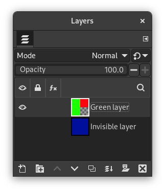

O comando de mescla todas as camadas que estão visíveis na imagem em uma única camada. As camadas visíveissão aquelas que estão indicadas no diálogo de Camadas com um ícone de “olho”.
![[Nota]](images/note.png)
|
Nota |
|---|---|
|
Com este comando, as camadas originais irão desaparecer. Com o comando Foto do que é visto , uma nova camada é criada no topo da pilha e as camadas originais continuam existindo. |
-
You can access this command from the main menu through → .
-
You can also use the keyboard shortcut Ctrl+M.
- A camada final, combinada, deve ser:
-
Camadas visíveis são as que estão marcadas com um ícone de “olho” no diálogo de camadas (mesmo que estejam completamente sobrepostas por outras camadas)
-
Expandida como necessário: A camada final é grande o suficiente para conter todas as camadas combinadas. Note que uma camada no GIMP pode ser maior que a imagem.
-
Cortada para o tamanho da imagem: A camada final fica do mesmo tamanho que a imagem. Lembre-se de que camadas no GIMP podem ser maiores do que a própria imagem. Todas as camadas da imagem que forem maiores que a imagem serão cortadas por esta opção.
-
Cortada para o tamanho da camada de baixo: A camada final será do mesmo tamanho que a camada de baixo. Se essa camada for menor do que algumas das camadas visíveis. a camada final será cortada e ajustada para o tamanho e a posição da camada de baixo.
-
- Merge within active groups only
-
This self-explanatory option is enabled when a layer group exists.
- Descartar camadas invisíveis
-
Quando esta opção for marcada, as camadas que não estiverem visíveis serão removidas da pilha de camadas.
Figura 16.70. Exemplo de “Combinar camadas visíveis”

Example image

Before applying “Merge visible layers”: Three layers; two layers are visible

After applying “Merge visible layers” with “Discard invisible layers” unchecked

After applying “Merge visible layers” with “Discard invisible layers” checked